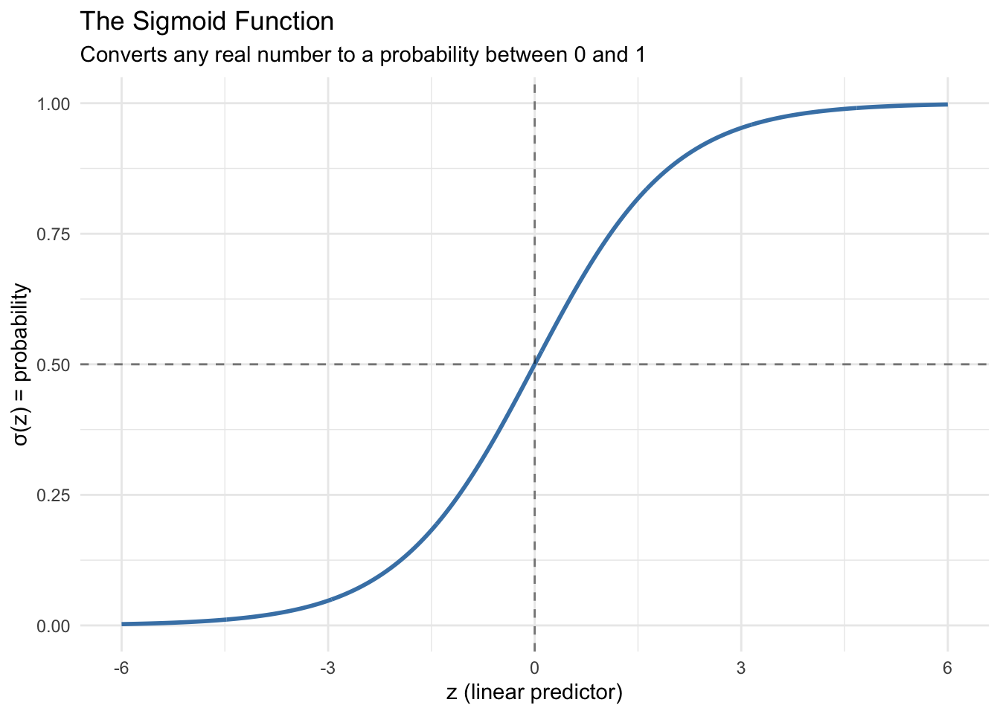
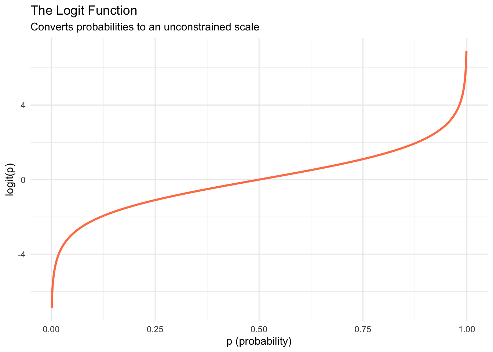

Module 6.1
Logistic Regression
Prework
Install the peacesciencer package and have a look at its documentation to familiarize yourself with its contents and basic functions:
install.packages("peacesciencer")Overview
So far, we have modeled continuous outcomes like democracy scores and GDP per capita. But many of the most interesting questions in research involve binary outcomes — yes or no, conflict or no conflict, voted or didn’t vote. Logistic regression is the standard tool for modeling these binary outcomes, and it is one of the most widely used methods in the social sciences.
Binary Outcomes
A binary outcome (or binary response variable) is a variable that takes on exactly two possible values, typically coded as 0 and 1. Examples include:
- Did civil conflict begin in this country this year? (0 = No, 1 = Yes)
- Did a country vote for this UN resolution? (0 = No, 1 = Yes)
- Did a voter turn out in the election? (0 = No, 1 = Yes)
- Does a country have judicial review? (0 = No, 1 = Yes)
For each observation, we are interested in modeling the probability that the outcome equals 1. This is fundamentally different from predicting a continuous outcome.
Why Not Linear Regression?
You might wonder: why not just use the linear regression we already know? The problem is that linear regression can produce impossible predictions. Probabilities must be between 0 and 1, but a linear model can predict values like −0.3 or 1.7 — which are mathematically meaningless as probabilities.
Logistic regression solves this by using a mathematical transformation that ensures all predicted values remain between 0 and 1, no matter what the predictor values are.
Bernoulli Trials and Probability Modeling
The right framework for binary outcomes is the Bernoulli trial: a random experiment with exactly two possible outcomes (success and failure), where success is coded as 1. When we model civil conflict onset, each country-year is a separate Bernoulli trial:
\[y_i \sim \text{Bernoulli}(p_i)\]
Each observation has its own probability \(p_i\) of “success” (conflict onset in this case — the term is statistical, not normative). Our goal is to model how predictor variables influence this probability.
Generalized Linear Models
Logistic regression belongs to a broader family of models called Generalized Linear Models (GLMs). All GLMs share three characteristics:
- A probability distribution describing the outcome (Bernoulli for binary data)
- A linear predictor: \(\eta_i = \beta_0 + \beta_1 X_{1i} + \cdots + \beta_k X_{ki}\)
- A link function that connects the linear predictor to the outcome probability
The link function is the key innovation: it translates between the unconstrained linear predictor (which can range from −∞ to +∞) and the probability (which must stay between 0 and 1).
The Logistic Regression Model
The Sigmoid Function
The sigmoid function (also called the logistic function) takes any real number and converts it to a probability between 0 and 1:
\[\sigma(z) = \frac{1}{1 + e^{-z}}\]
The characteristic S-shape guarantees the output stays between 0 and 1. When the linear predictor is 0, the probability is exactly 0.5.
The Logit Link Function
The logistic regression model uses the logit as its link function. For \(0 \leq p \leq 1\):
\[\text{logit}(p) = \log\left(\frac{p}{1-p}\right)\]
The logit is the log of the odds (\(p\) divided by \(1-p\)). It maps probabilities from [0, 1] to the entire real line, which is exactly what we need to model them with a linear predictor:

Putting it all together, logistic regression models:
\[\text{logit}(p_i) = \beta_0 + \beta_1 X_{1i} + \cdots + \beta_k X_{ki}\]
To get predicted probabilities, we apply the sigmoid function to the linear predictor.
Analyzing Conflict Onset
We will use the peacesciencer package to examine what factors are associated with civil conflict onset. The package provides convenient functions to build a dataset of country-years and add various predictors. We replicate part of Fearon and Laitin’s (2003) influential study of civil war.
library(peacesciencer)
conflict_df <- create_stateyears(system = 'gw') |>
filter(year %in% c(1946:1999)) |>
add_ucdp_acd(type = c("intrastate"), only_wars = FALSE) |>
add_democracy() |>
add_creg_fractionalization() |>
add_sdp_gdp() |>
add_rugged_terrain()
glimpse(conflict_df)Rows: 7,624
Columns: 22
$ gwcode <dbl> 2, 2, 2, 2, 2, 2, 2, 2, 2, 2, 2, 2, 2, 2, 2, 2, 2, 2, 2…
$ gw_name <chr> "United States of America", "United States of America",…
$ microstate <dbl> 0, 0, 0, 0, 0, 0, 0, 0, 0, 0, 0, 0, 0, 0, 0, 0, 0, 0, 0…
$ year <dbl> 1946, 1947, 1948, 1949, 1950, 1951, 1952, 1953, 1954, 1…
$ ucdpongoing <dbl> 0, 0, 0, 0, 0, 0, 0, 0, 0, 0, 0, 0, 0, 0, 0, 0, 0, 0, 0…
$ ucdponset <dbl> 0, 0, 0, 0, 0, 0, 0, 0, 0, 0, 0, 0, 0, 0, 0, 0, 0, 0, 0…
$ maxintensity <dbl> NA, NA, NA, NA, NA, NA, NA, NA, NA, NA, NA, NA, NA, NA,…
$ conflict_ids <chr> NA, NA, NA, NA, NA, NA, NA, NA, NA, NA, NA, NA, NA, NA,…
$ euds <dbl> 1.293985, 1.308359, 1.343539, 1.330836, 1.354015, 1.350…
$ aeuds <dbl> 0.4862558, 0.5006298, 0.5358093, 0.5231064, 0.5462858, …
$ polity2 <dbl> 9, 9, 9, 9, 9, 9, 9, 9, 9, 9, 9, 9, 9, 9, 9, 9, 9, 9, 9…
$ v2x_polyarchy <dbl> 0.603, 0.607, 0.599, 0.580, 0.585, 0.611, 0.611, 0.612,…
$ ethfrac <dbl> 0.2226323, 0.2248701, 0.2271561, 0.2294918, 0.2318781, …
$ ethpol <dbl> 0.4152487, 0.4186156, 0.4220368, 0.4255134, 0.4290458, …
$ relfrac <dbl> 0.4980802, 0.5009111, 0.5037278, 0.5065309, 0.5093204, …
$ relpol <dbl> 0.7769888, 0.7770017, 0.7770303, 0.7770729, 0.7771274, …
$ wbgdp2011est <dbl> 28.539, 28.519, 28.545, 28.534, 28.572, 28.635, 28.669,…
$ wbpopest <dbl> 18.744, 18.756, 18.781, 18.804, 18.821, 18.832, 18.848,…
$ sdpest <dbl> 28.478, 28.456, 28.483, 28.469, 28.510, 28.576, 28.611,…
$ wbgdppc2011est <dbl> 9.794, 9.762, 9.764, 9.730, 9.752, 9.803, 9.821, 9.857,…
$ rugged <dbl> 1.073, 1.073, 1.073, 1.073, 1.073, 1.073, 1.073, 1.073,…
$ newlmtnest <dbl> 3.214868, 3.214868, 3.214868, 3.214868, 3.214868, 3.214…Each row represents one country in one year. The variable ucdponset is our binary outcome — it equals 1 if a civil conflict began in that country in that year, and 0 otherwise.
Running a Logistic Regression
The syntax for logistic regression is nearly identical to linear regression — we switch from lm() to glm() and add family = "binomial" to specify the logit link:
conflict_model <- glm(ucdponset ~ wbgdppc2011est,
data = conflict_df,
family = "binomial")
summary(conflict_model)
Call:
glm(formula = ucdponset ~ wbgdppc2011est, family = "binomial",
data = conflict_df)
Coefficients:
Estimate Std. Error z value Pr(>|z|)
(Intercept) -1.00735 0.41297 -2.439 0.0147 *
wbgdppc2011est -0.35695 0.05089 -7.015 2.31e-12 ***
---
Signif. codes: 0 '***' 0.001 '**' 0.01 '*' 0.05 '.' 0.1 ' ' 1
(Dispersion parameter for binomial family taken to be 1)
Null deviance: 1420.5 on 7623 degrees of freedom
Residual deviance: 1381.9 on 7622 degrees of freedom
AIC: 1385.9
Number of Fisher Scoring iterations: 7Interpreting the Coefficients
The model equation on the log-odds scale is:
\[\log\left(\frac{p}{1-p}\right) = -1.16 - 0.33 \times \text{log GDP per capita}\]
The coefficient for log GDP per capita is negative and significant — wealthier countries have lower odds of conflict onset. But interpreting the magnitude on the log-odds scale is not intuitive, so we convert to odds ratios by exponentiating the coefficient.
Odds Ratios
The odds ratio for log GDP per capita is approximately 0.718. This means that for each one-unit increase in log GDP per capita, the odds of conflict onset are multiplied by 0.718 — a decrease of about 28%. An odds ratio less than 1 indicates a negative association; greater than 1 indicates a positive association.
Predicted Probabilities
Odds ratios tell us about relative effects, but for concrete interpretation we want predicted probabilities: what is the probability of conflict onset for a country with a given level of GDP?
We can use the marginaleffects package to calculate these for specific cases. Let’s predict conflict onset for the United States, Venezuela, and Rwanda in 1999:
library(marginaleffects)
selected_countries <- conflict_df |>
filter(
gw_name %in% c("United States of America", "Venezuela", "Rwanda"),
year == 1999
)
marg_effects <- predictions(conflict_model, newdata = selected_countries)
tidy(marg_effects) |>
select(estimate, p.value, conf.low, conf.high, gw_name)# A tibble: 3 × 5
estimate p.value conf.low conf.high gw_name
<dbl> <dbl> <dbl> <dbl> <chr>
1 0.00751 2.31e-179 0.00538 0.0105 United States of America
2 0.0129 0 0.0104 0.0160 Venezuela
3 0.0304 2.13e-259 0.0251 0.0368 Rwanda The predicted probability of conflict onset is highest for Rwanda, followed by Venezuela, and lowest for the United States — consistent with the negative relationship between wealth and conflict onset.